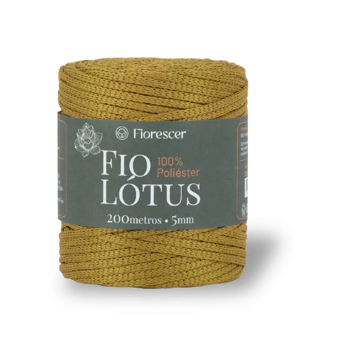
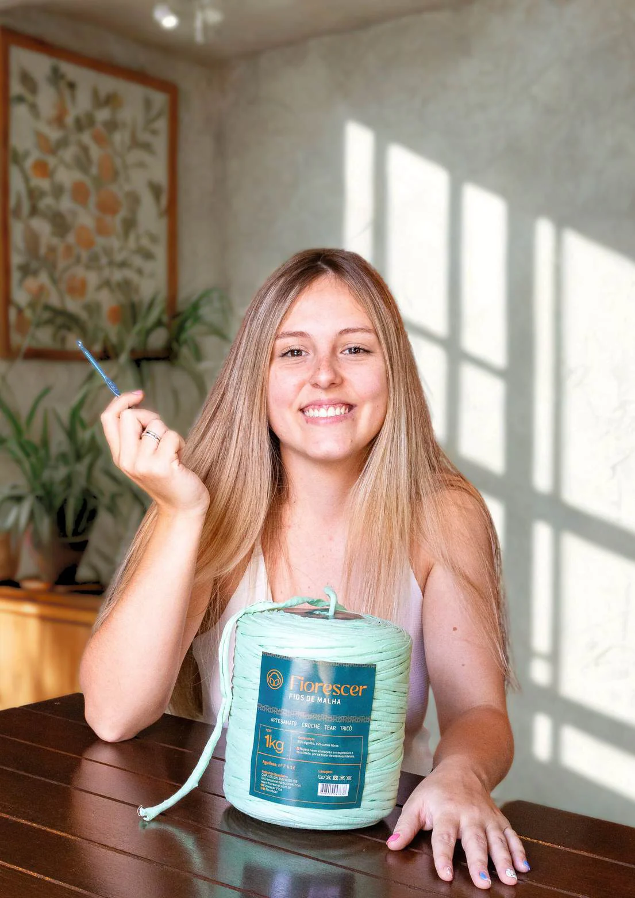
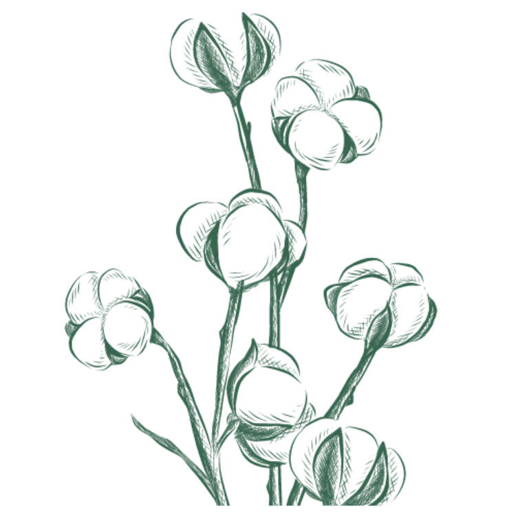
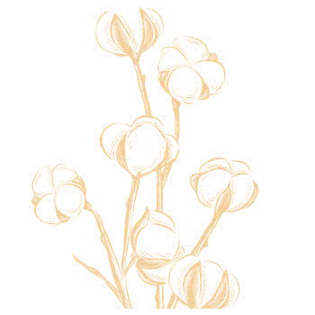
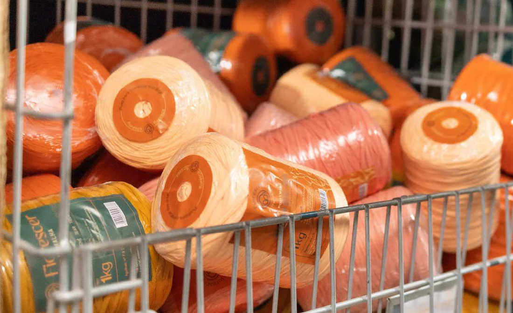
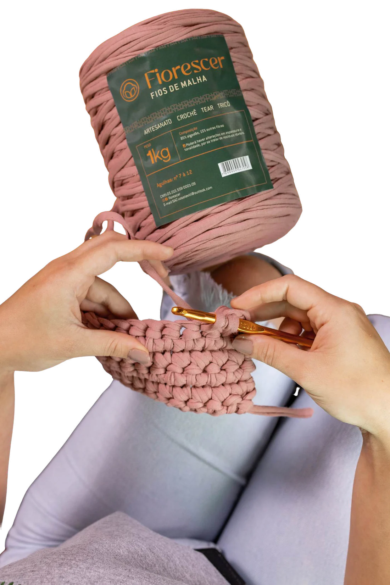
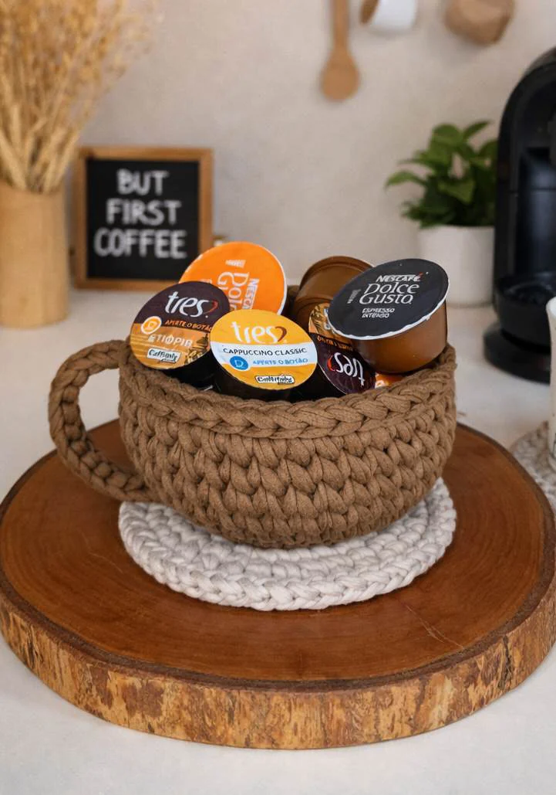
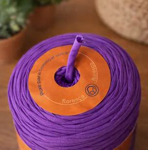
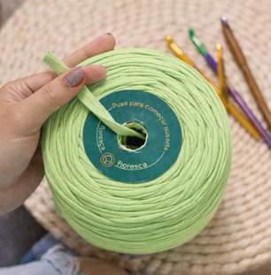
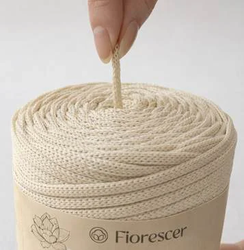

O que você vê quando olha para um fio?
Do fio à ideia
O fio é o ponto de partida. O que vem depois é de quem cria: a cor escolhida, o ponto que se repete, a peça que ninguém mais tem.
A Fiorescer não vende apenas fios.
Vende possibilidades para criar.


02 · Para lojistas
Fios para armarinhos, lojas de aviamentos e lojas de artesanato. Abasteça sua loja com opções para crochê, tricô e criação artesanal.
03 · Nosso canal
Assista ao vídeo da Fiorescer e conheça um pouco mais da marca. No YouTube, você encontra outros conteúdos do nosso canal.
Acesse nosso canal no YouTubeCapítulo 04

Capítulo 05 · Sobre nós
Criada em 2002 pelo grupo Voss Têxtil, somos especializados na coleta e no reaproveitamento de materiais provenientes de indústrias têxteis. O que antes seria descartado, transformamos em fios de alta qualidade, prontos para ganhar novas formas nas mãos de quem cria.
Além dos fios residuais, a Fiorescer também conta com linhas desenvolvidas para atender diferentes necessidades de criação, como o fio Lótus. Embora não seja produzido a partir de material reciclado, ele segue o mesmo padrão de qualidade, cuidado e compromisso com a excelência presente em todos os nossos produtos.
Ao longo de mais de duas décadas, a Fiorescer construiu uma trajetória marcada pela qualidade, pela responsabilidade ambiental e pela confiança de quem transforma fios em criações únicas.



Capítulo 06 · Nossos fios
Cada linha existe para um tipo de projeto. Navegue pelos fios para ver o que cada um faz de melhor e escolha pelo que você quer criar.
Fino e com brilho delicado: é o fio para quando o acabamento precisa aparecer sem pesar na peça.
Venda em múltiplos de 6 · cartela fixa com 6 cores
Macio e maleável, com 200 metros para criar bolsas, cestos e peças decorativas.
Cartela fixa com 22 cores

Com lurex e brilho na peça inteira: um detalhe cintilante para projetos que pedem destaque.
Cartela fixa com 8 cores

Malha reaproveitada para tapetes, cestos e outras peças grandes.
As tonalidades podem variar. Consulte a disponibilidade antes de fechar o pedido.

Algodão com elastano e espessura mais uniforme: acompanha o ponto e dá elasticidade às peças.
As tonalidades podem variar. Consulte a disponibilidade antes de fechar o pedido.

Cores vibrantes e elasticidade para peças cheias de presença.
As tonalidades podem variar. Consulte a disponibilidade antes de fechar o pedido.
Capítulo 07 · Qualidade
Nossa embalagem com abertura central permite usar o fio diretamente do rolo, com mais praticidade e organização.
Além de proteger o fio contra sujeiras, facilita o transporte e garante um uso mais funcional no dia a dia.



Aplicamos um processo cuidadoso na fabricação dos fios residuais, buscando o mínimo de avarias e a maior uniformidade possível de espessura ao longo de todo o comprimento do rolo.
Nosso compromisso é oferecer fios de alta qualidade, desenvolvidos para estimular a criatividade e valorizar cada projeto artesanal, do início ao acabamento final.
Opções para diferentes aplicações, mantendo um padrão consistente de qualidade, cuidado e confiabilidade para quem cria e para quem revende.